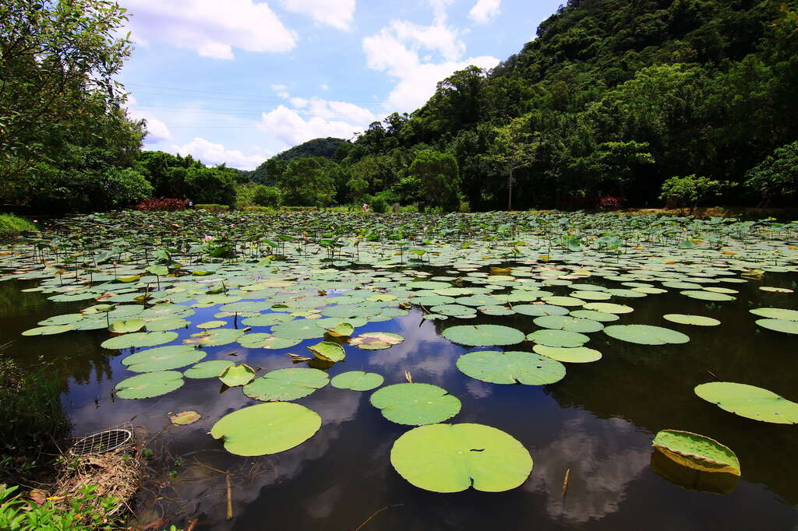

景點介紹
「山豬湖生態親水園區」位於桃園市大溪區大漢溪右岸，於規劃階段結合生態環境保育、自然資源經營管理以及考量大溪整體旅遊帶進行串聯規劃，目標除了打造山豬湖園區成為多元戶外生態教育場所，亦可使自行車綠網系統串接至月眉生態農業區、大溪水資源回收中心。強化大溪地區整體旅遊軸帶之人文風貌與生態永續價值，亦提供完善的自然遊憩體驗環境，期望成為北台灣遊憩及環境教育場所之新亮點。
山豬湖生態親水園區前身為非法佔用大漢溪河川區域之私人主題樂園，多年前拆除後園區內生態自然蓬勃繁衍、生機茂盛。為了推廣大漢溪自然及人文之美，並打造自然生態的觀光串聯軸帶，桃園市政府水務局以尊重自然、環境友善的工法，以生態探索、環境觀察、全齡共享的經營管理模式，透過保留河川堤岸的生態之美，結合鄰近大溪人文觀光資源，建立親水綠帶和環境教育的大漢溪自然生態觀光軸帶，打造桃園市水岸環境新亮點。
